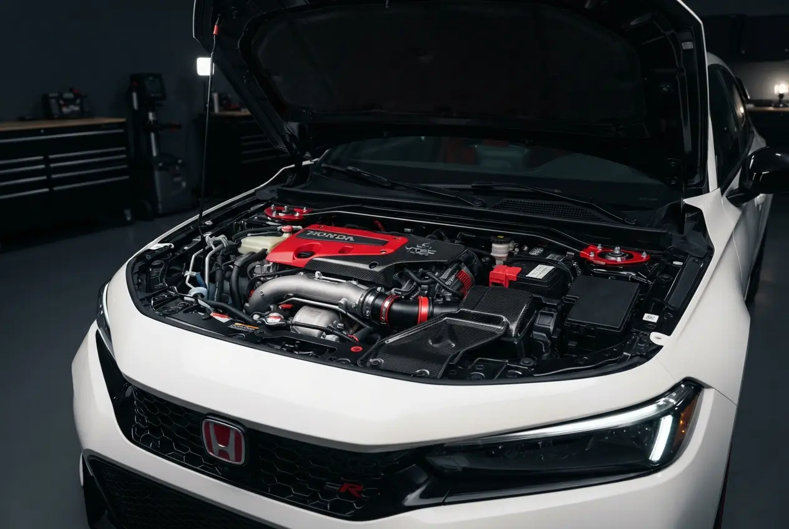

EL CORAZÓN DEL TYPE R
Un motor VTEC Turbo
El Civic Type R FL5 europeo utiliza un motor de gasolina de cuatro cilindros y 2,0 litros con turbocompresor. Entrega 242 kW —329 CV— y 420 N·m de par máximo.
El turbo aprovecha la energía de los gases de escape para accionar una turbina, conectada a un compresor. Este comprime el aire de admisión antes de que llegue al motor.
El intercooler ayuda a enfriar ese aire comprimido. Turbo y VTEC cumplen funciones diferentes: uno actúa sobre la sobrealimentación y el otro sobre el control de las válvulas.
Tres conceptos para entenderlo
- Par motor
- Describe el efecto de giro que produce el motor. Se expresa en newton metro, N·m.
- Régimen de giro
- Indica cuántas vueltas da el cigüeñal en un minuto. Se expresa en revoluciones por minuto, rpm.
- Potencia
- Depende del par y de la velocidad de giro. Por eso no basta con conocer únicamente el par máximo de un motor para comparar sus prestaciones.
El papel de la transmisión
Este Civic Type R utiliza una caja manual de seis velocidades y tracción delantera.
Las relaciones del cambio permiten adaptar el giro del motor a distintas velocidades del vehículo. En una marcha corta se obtiene una mayor multiplicación del par hacia las ruedas.
El embrague permite desacoplar temporalmente el motor de la caja de cambios, por ejemplo durante un cambio de marcha.
Datos del modelo: documentación técnica oficial de Honda .